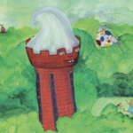

Mijnheer Sjattodo

Er was eens een jongen en die heette Boese. Eigenlijk had hij en veel langere naam. Zijn vader en moeder zeiden trots tegen ooms en tantes die op bezoek kwamen dat Boese Jaap Jan zijn volledige naam was. De laatste aanduidingen had hij van zijn grootvaders gekregen. Maar het duurde wel erg lang voordat al die namen waren geroepen, dus noemde iedereen hem gewoon Boese.
Zijn ouders waren blij met hun eerste boreling. Elke dag kreeg ons manneke de fijnste gerechten voorgezet en zo verwend met speelgoed dat hij af en toe gewoon niet wist waarmee hij zich moest bezighouden. Hij lustte alles en liet het eten gretig in zijn open gesperde mondje glijden. Toen hij zelf met de lepel de weg naar zijn waffelje kon vinden verdwenen smakkend appeltjes, peertjes, worteltjes en andere groenten in zijn lijfje. Alles vers! Daar zorgden zijn ouders wel voor. Tevreden wreven zijn vader en moeder hem over zijn ruggetje, armen en beentjes om vast te stellen hoe stevig het knaapje zich ontwikkelde. Zijn opa zei wel eens om grappig te zijn: “Jij mag wel heel erg blij zijn met dat stevige buikje want anders vallen alle lekkernijen steeds maar in je rompertje en zou je niet zulke sterke armen en benen krijgen.” Nu ontwikkelde hij zich tot een flinke gezonde knaap.
Al gauw kon Boese op zijn beentjes staan en nam zijn speelgoed stevig onder handen. De trommel trommelde na enige tijd niet zo best meer, van karretjes liepen wieltjes af, maar dat gaf niet want er stond nog zo veel waarmee hij zijn krachten kon meten.
Lezen deed Boese ook graag en zijn favoriete boekje ging over een boze mol die op een morgen een drol op zijn hoofd voelde ploffen toen hij voorzichtig zijn kop uit zijn molshoop stak. Wat was de spitssnuitige aardewroeter verontwaardigd en wat moest Boese daar om lachen toen hij aan de drol rook. “Bahhhh…” riep hij en gaf de mol groot gelijk dat hij de dader ging zoeken om bij hem zijn mollendrol op de kop te kakken. Een hond had het op zijn geweten en toen die lag te slapen, heeft onze graver wraak genomen. “Lekker Bahh…”riep Boese opnieuw.

Maar tussen al dat speelgoed lag een ding waar Boese al heel vroeg om schreeuwde: “Balll.., ballll…”, en rende vervolgens naar een kleurige voetbal om die op te pakken en weg te gooien. Het duurde dan ook niet lang, hoe kan het ook met zulke stevige benen, dat hij de bal een flinke schop kon geven. Dit bolle kameraadje had de grootse lol in de stevige behandeling die hem ten deel viel. Zoevend vloog hij langs de oren van vader en moeder, tegen de ramen, en soms kieperde er ook wel eens een vaas om. Maar iedereen moest lachen om het plezier dat Boese had met zijn kleurrijke vriendje.
Wat was Boese verdrietig toen er een ongeluk gebeurde. Op een ochtend gaf hij zijn speelkameraad een ferme trap en die vloog over de tafel precies op de naald van moeder die druk bezig was een zoom in zijn broek te naaien. Zijn vriendje slaakte een luide zucht en bleef troosteloos liggen op de tafel.
Met zijn blauwe ogen keek hij Boese aan en zei: ”Ik denk dat je nu maar een ander speelkameraadje moet gaan zoeken.”
Hij wilde het wel wat rustiger aan gaan doen, had hij er nog aan toegevoegd.
“Maar wat moet ik dan doen?” reageerde Boese verdrietig.
“Oh, breng me maar naar die kleine speeltuin. Dan kan ik rustig naar al die rennende, springende en glijdende kinderen kijken en geeft soms iemand mij nog een schop. Dan geniet ik gewoon nog een tijdje van mijn oude dag.”
Boese was erg bedroefd maar dat duurde gelukkig niet zo heel erg lang. Op zijn verjaardag kwam Oma langs en in haar hand droeg ze een grote tas.
“Lieve Boese,”zei ze “pak dit maar gauw uit.” Wat was Boese blij toen uit die tas een grote bal kwam, met blauwe, rode en gele kleuren en allerlei stippen erop. De twee donkere ogen op de bal keken hem aan en leken te zeggen: “Kom maar op Boese, mij kun je een flinke schop geven.”
“Ja, zei oma, ‘ik heb heel lang gezocht maar ik heb deze bal gevonden in een winkel hier heel ver vandaan. In een warenhuis voor Magie en fantasie. En het bijzondere van deze bal is dat hij eenmaal met jou een spannende reis gaat maken. Maar dan moet je wel aan de bal laten zien dat je goed leert voetballen.”
Dat was niet tegen dovemansoortjes gezegd en toen Boese groter werd en hij alleen naar buiten mocht, nam hij zijn grote vriend mee onder de arm. Niet zo heel ver van waar hij woonde, vond hij een klein veldje naast een bos met heel hoge bomen. Daar ging Boese aan de slag. Het duurde dan ook niet zo lang of hij liet de bal van zijn voeten omhoogspringen, op zijn hoofd dansen en schopte hij de knikker in de lucht waarna hij hem weer keurig dood maakte onder zijn knie. Elke dag merkte hij dat hij weer een beetje hoger kon schoppen en de ogen van zijn speelkameraad straalden tevreden als hij hem een enorme loei had gegeven.
Op een middag, het zonnetje stond hoog aan de hemel en hij had vrij van school, besloot Boese om naar zijn veldje te gaan. Hij had er zin in want op school was hij boos geweest op de juf. Die had gezegd dat hij te druk was, moest leren stilzitten en zijn aandacht meer bij het rekenen moest houden. “Dat stomme mens,” dacht hij toen hij zijn balkameraad een tijdje van de ene voet naar de andere liet dansen om hem hoog te houden. “Stom mens,’’ schreeuwde Boese toen de bal wegsprong en vervolgens hem zo’n harde trap gaf dat hij net zo hoog vloog als de bomen van het bos. Het gaf onze voetballer een spannend gevoel in zijn buik dat zijn vriend zo voor de wolken zweefde met de flikkerende stralen van de zon op zijn kleurrijke bast. Als hij weer beneden is dan geef ik weer zo’n hengst, dacht hij, maar toen gebeurde er iets dat hij niet had verwacht. De bal bleef zweven en begon in de lucht rondjes te draaien. Het leek wel of hij hem iets toeriep, maar hij kon het niet verstaan.
“Waarom kom je niet beneden?”schreeuwde Boese.
“Kom mij achterna,” hoorde hij de stem van de bal roepen. “Kom mij achterna…” en toen zag hij dat de bal langzaam richting het bos zweefde.
Boese stond sprakeloos. Hem achterna gaan? Maar wat gaat hij daar doen? Ik ben daar nog nooit geweest en ik weet niet of mijn pappa en mijn mamma dat wel goed zullen vinden? De bal dreef langzaam weg en zijn kleurschitteringen leken uit te stralen: “Volg mij. Er kan je niets gebeuren.”
Boese merkte dat zijn hart was gaan bonzen, wat was het spannend om naar dat bos te lopen en zijn kameraadje te volgen.
Hij trok de stoute schoenen aan en bij de bomen gekomen zag hij een pad. Tussen de bomen door zag hij zijn vriend rustig vliegen en die wiebelde van tevredenheid toen die merkte dat Boese hem volgde. Het pad maakte allerlei bochten en Boese moest oppassen dat hij niet struikelde over de dikke wortels van de woudreuzen die over het zand lagen gekronkeld als onbeweeglijke slangen die hij in Artis had gezien. Boese vond het eng maar vertrouwde op zijn vriend. Zo liep hij een kwartiertje door toen ineens alle bomen weken en hij voor een enorme toren stond. Een rond kasteel? Hij kwam ogen tekort om naar het massieve metselwerk te kijken waarin allerlei ronde en rechte ramen in een cirkel waren aangebracht. En stond die toren op stelten? Dikke palen kropen tegen het gebouw omhoog en maakten boven een bocht om een nog breder stuk van het ronde gevaarte te stutten. Het leek wel een groot softijs van steen.
Zo’n eenzaam groot gebouw had hij nog nooit gezien, helemaal verscholen tussen hoge bomen. Toen hij langs de betonnen palen naar boven keek, zag hij zijn vriend naar beneden duiken en achter de rand verdwijnen. Kom ook, leek hij te gebaren.
Wat moet ik doen, dacht Boese. Hoe kan ik in die hoge toren mijn vriend terugvinden? Hij voelde dat zijn hart weer sneller was gaan kloppen maar besloot toch om rond de toren te lopen.
Halverwege zag hij een deur op een kier staan. Zal ik naar binnen gaan? Is dat niet te brutaal? Ik moet toch mijn vriend terug vinden, mompelde hij tegen zichzelf, dus duwde Boese de deur verder open en stapte over de drempel. Hij schrok van de grote ruimte waar helemaal niets in stond. Hier zou hij met gemak al zijn speelgoed kunnen uitstallen, dacht hij in een flits. Omdat het zonlicht door al die ronde en vierkante ramen straalde kon hij zien dat de grote kamer geen plafond had. Wat was het hoog. Of toch wel? In de schemer zag hij een vliering en kon je naar boven lopen over gemetselde trappen. Hij voelde duizelingen in zijn hoofd toe hij merkte hoe verheven het allemaal was.
“Ben je daar bal?’ Zijn stem klonk hol in de grote ruimte. “Bal, bal waar ben je?” Het geluid leek alle kanten uit te vliegen. Het werd na een tijdje weer doodstil.
Misschien moet ik nog harder roepen, dacht Boese en luidkeels schreeuwde hij: “Balll…, Balll…, waar ben je?”
“De bal is hier,’ klonk ineens een zware stem. Boese schrok zich een hoedje. Zo’n zware stem had nog nooit tegen hem gesproken. Hij hoorde de ruiten rinkelen en de deur achter hem klepperen.
Van schrik durfde hij niets te zeggen maar het duurde niet lang of de stem klonk opnieuw.
“Je moet je bal hier boven komen halen.”
´Maar wie… bent u…” stotterde Boese.
De stem begon te lachen en het geluid resoneerde hol door het hoge gebouw. Boese voelde zich steeds kleiner worden.
“Je hoeft niet bang voor me te zijn,” dreunde de stem opnieuw. “Ik ben de watertoren.”
“Bent u de watertoren?”
“Ja, zo noem ik me nu. Vroeger heette ik anders. Ik heb altijd voor water gezorgd voor iedereen hier in de buurt, ook voor je vader en je moeder. Maar mijn grote bakken hierboven staan nu leeg. Ik ben werkloos geworden omdat machines mijn werk hebben overgenomen.
Boese meende een snik te horen. Hij voelde dat de toren verdriet had, misschien wel een traan moest laten.
“Maar dan hebt u wel hard gewerkt in uw leven.”
“Ja heel hard. Ik heb duizenden liters water op mijn schouders gedragen. Dag en nacht. Altijd stond ik voor iedereen klaar. Ik was zo belangrijk dat mensen mij vroeger niet watertoren noemden maar Chateau d’eau”.
“Sjattodo?”
“Ja, dat is een Frans woord. Ik was een kasteel voor water.”
“Ik wil u ook wel mijnheer Sjattodo noemen hoor. Dat is een heel mooie naam.”
“Dat doet me goed om te horen.”
“U bent ook heel mooi om te zien. En sterk denk ik. U kunt vast en zeker ook een bal heel ver wegschieten.”
“Daar heb ik nooit tijd voor gehad want ik moest elke dag de beste kwaliteit water leveren. Als je vader en je moeder wijn drinken dan drinken ze ook van een chateau maar dan voor wijn; van een wijnkasteel. Ik zorgde voor het zuiverste water. Iedereen mocht van mijn waterkasteel drinken.”
“Mijn vader heeft mij leren tellen met flessen mijnheer Sjattodo. Ze hadden een feestje en ik kon de hele nacht niet slapen van de herrie. ‘s Morgens stonden er heel veel van die flessen van wijnkastelen en toen heeft hij mij leren tellen voordat ze naar de glasbak gingen.”
“Ik zal maar niet vragen tot hoever je nu kunt tellen, ha… ha…”
“Mijnheer Sjattodo mag ik u wat vragen?”
“Natuurlijk lieve jongen.”
“Ik heb heel hard gevoetbald en ik heb dorst. Hebt u voor mij niet een glaasje water?”
“Jongen, wat had ik dat graag gedaan maar helaas, al mijn reservoirs zijn leeg. Ik ben leeg achter gelaten.”
“Wat jammer, ik heb zin in water.”
“Misschien weet ik wat,” zei de toren. Kom maar naar boven geklauterd langs de trap. Misschien heb ik wel een oplossing.”
“Maar mijnheer Sjattodo, ik heb wel hoogtevrees.”
“Kijk niet naar beneden als je naar boven loopt. Tel gewoon het aantal treden, dan denk je nergens anders aan. Kom je bal halen en dan heb ik een verrassing voor je.”
Boese wist dat er niets anders opzat dan naar boven te gaan en ondanks dat het zweet hem uitbrak, zette hij zijn voet op de eerste tree en zei één. Toen de tweede en dat was twéé. Opeens merkte hij hoe leuk het was om over die mooie stenen naar boven te lopen en hij telde en telde. Bij elke tiende tree stond hij even stil om diep adem te halen en dan ging hij weer verder. Bij de 160ste tree stond hij ineens op een hoge verdieping die weer helemaal leeg en verlaten was.
“Daar ben je dan,” klonk de stem van mijnheer Sjattodo ineens veel dichterbij. “Zie je wel dat je niet bang hoeft te zijn. Het gaat vanzelf. Nu zie je hoe groot en sterk ik ben. Precies 100 jaar geleden ben ik gebouwd en toen kwam de commissaris van de koningin om mij feestelijk te openen. De commissaris was zelfs een baron. Ik weet nog hoe hij heette. Baron van Hövell van Westerflier tot Savelsbosch. Hij sprak heel mooie woorden die ik nooit zal vergeten. Dat mensen nooit meer ziek zouden worden van vies water omdat voortaan kristalhelder gemeentepils via mijn ondergrondse leidingen stroomt. Kun je je nu voorstellen hoe verdrietig ik ben dat ik nu niets sta te doen. Mijn oude benen buiten krijgen soms jichtaanvallen van het niets doen. Die zijn gewend aan te pakken en dat niets doen bevalt ze helemaal niet. Daar komen klachten van. Rust roest zei mijn oude vader en nu sta ik hier zelf te roesten.”
“ Oh wat kan het leven toch hard zijn,” bromde hij na een pauze met een waterige stem.
“Ik weet niet wat een baron is maar als je zo’n lange naam hebt dan moet hij wel belangrijk zijn.”
“Dat was hij inderdaad. Maar wat ik nog leuker vond, was dat er ook een dichter was.”
“Een dichter kan goed rijmen hè.”
“Hij kon rijmen als de beste. Ik weet nog steeds zinnen die hij zo mooi heeft opgezegd.”
Kunt u ook voordragen? Mijn vader kan dat heel mooi want die heeft daarvoor op een speciale school gezeten.”
“Als ik mijn best doe kan ik het ook wel een beetje.”
“Toe, laat eens horen?”
“Nu, vooruit dan, ik ga het proberen,”en mijnheer Sjattodo begon zijn keel diep te schrapen. “Het is wel lang geleden. Misschien weet ik niet alle woorden meer precies.” Met zijn zware stem begon hij te declameren zodat de ruiten er weer van gingen rinkelen en de deur beneden te rammelen.
Ingetogen staar ik over dorp en stad
Mijn nek torst massa’s water
Kinderen slurpen uit mijn kranen
of krijsen in een bubbelbad
Ik ben de koning van het witte goud,
die luitjes gezonder maakt
Bloemen fleuren, bomen ringen
Door mij worden zij oud
“Dat is mooi gezegd.”
“Ja, en je hoort dat ik vroeger heel wat kinderen te drinken heb gegeven.”
“Ik hoop dat u voor mij ook nog een glaasje heeft mijn heer Sjattodo?”
“Straks jongen, nog heel even geduld want ik herinner me ineens nog meer verzen van die dichter. Het gaat ongeveer zo.”
zorgen doe ik voor de zon
na de klok van zessen
verzwelg ik hem als Nut
om zijn haar te wassen
in mijn waterput
en, zijn tomeloze dorst te lessen.
Bij het krieken van de morgen
blaas ik hem terug
Met zijn gouden vacht in krullen
Gaat de zon voor stralen zorgen.
“Dat klinkt ook mooi, alleen weet ik niet wie Nut is.”
“Dat zal ik je vertellen….Goh, ik weet nog steeds je naam niet. Hoe heet je eigenlijk?”
“Ik heet Boese mijnheer Sjattodo.”
“Dat is ook een mooie naam, jongen. Daar moeten je ouders diep over hebben nagedacht. Luister, 5000 jaar geleden leefde in het oude Egypte een godin en die heette Nut. Van haar heb ik geleerd hoe ik de zon kan wassen.”
“Dan ben u wel heel geleerd.”
“Ja, dat ben ik wel een beetje,” en Boese hoorde dat mijnheer Sjattodo tevreden bromde.”Maar zo goed als zij dat kon, heb ik het niet kunnen leren. Ook al ben ik groot en wijs, ook ik maak wel eens een foutje en dan is de dag niet vol zonneschijn maar grijs en druilerig. Dan hoor ik de mensen mopperen.”
“Mijnheer Sjattodo, ik vind het heel vervelend dat u niets meer mag doen. Ik ga dat tegen mijn papa en mijn mamma zeggen. Die luisteren altijd heel goed naar mij.”
“Dat is lief jongen maar wat zouden ze kunnen doen voor een oud waterkasteel?”
“Ik moet nu eerst mijn bal zoeken.”
“Dan hoef je niet ver te lopen jongen, die ligt in mijn lege reservoir. De bal is door hetzelfde raam naar binnen gevlogen als vroeger de zon. Het gaf me een heerlijk ouderwets gevoel een rond ding naar binnen te zien vliegen. Ik voelde me weer even jaren jonger.”
“Maar mijnheer Sjattodo, als de zon niet meer door u gewassen wordt, wie doet het dan?”
“Boese als ik daar een antwoord op geef voel ik mijn hart altijd overslaan. De zon gaat tegenwoordig naar een wasstraat! Nou, dat merk je wel hoor. Het resultaat is dat we hier nog nooit zoveel regen hebben gehad.”
“Ik ga dat allemaal thuis vertellen,”zei Boese, “maar ik moet eerst mijn bal halen.”
Daal het trapje af in de grote put en pak hem daar. Daarna zal ik je dorst lessen, dat heb je wel verdiend. Ben voorzichtig, het luik staat open.”
Boese liep naar een groot gat van meters diep waar eerst duizenden liters water in hadden gestaan. Maar alles was donker toen hij naar beneden keek.
“Ik zie niets mijnheer Sjattodo.”
“Wacht even tot je ogen zijn gewend, je bal is erin gerold toen hij door het dak naar binnen kwam vallen.”
Gelukkig hoefde Boese niet zo heel lang te wachten want een ferme zonnestraal viel door de ramen naar binnen en hij zag zijn bal op de bodem van de grote put liggen. Onmiddellijk ging hij het trapje af om zijn vriend onder zijn arm te klemmen en rende terug. “Die bal heeft beslist een waterijsje verdiend,” zei de toren, “want die heeft ervoor gezorgd dat je hier bent gekomen. Maar nu eerst je dorst. Luister, in de hoek daar achter die deur is nog en speciaal watervat. Met heel bijzonder water. Daarmee waste ik vroeger de zon. Dat drink ik zelf ook want een toren moet zo af en toe ook eens wat te drinken hebben. Drink zoveel als je wilt.”
Dat liet Boese zich geen twee keer zeggen en opende de deur en zag in een kleine kamer een grote gouden kraan en daarbij emmers en bekers staan. Klaterend liet hij een mok volstromen om die helemaal leeg te drinken en daarna nog een halve beker. Hij had zo gulzig gedronken dat hij er een flinke boer van moest laten maar gelukkig waren zijn vader en moeder er niet bij om hem daarover te beknorren.
Toen hij weer terugliep hoorde hij de stem van de toren vragen: “En smaakte het?”
“Heerlijk,” zei Boese. “Ik heb nog nooit zo’n zuiver water gedronken.”
“Goed zo jongen, en ga nu maar gauw naar huis want anders worden je ouders nog ongerust als je te laat thuis komt.”
Boese liep naar de hoge trap om naar beneden te gaan. Wat was het diep daar beneden.
Verbaasd merkte hij dat hij zich heel anders voelde, alsof angst niet meer bestond.
Hij draaide zich om en vroeg: “ Waarom, mijnheer Sjattodo, ben ik helemaal niet meer bang voor de trap?”
De toren lachte en zei: “Nu heb je geen hoogtevrees meer Boese. Dat is het bijzondere van mijn water uit het geheime vat. Stel je voor dat ik hoogtevrees zou hebben dan zou ik altijd bang zijn geweest.
En de zon mag al helemaal geen angst hebben. Ha… Ha… Ha...”
“Mijnheer Sjattodo, mag ik nog een vraag stellen.
“Natuurlijk!”
“Wat zou u nog kunnen doen als u geen water meer hoeft te dragen?”
´Lief dat je dat vraagt. Luister Boese, een tijdje geleden waren er bezoekers die hier een café-restaurant wilde maken. Maar ambtenaren van de gemeente zeiden dat het onverantwoord was dat de gasten met een stuk in hun kraag hier 160 trappen moesten aflopen. De meesten zouden naar beneden rollen. Ik heb nooit meer iets gehoord. Waarom drinken mensen toch niet gewoon mijn zuivere water; dan vallen ze niet van de trap.”
“Ik ga nu maar gauw naar huis,” zei Boese en pakte zijn ronde kameraad stevig onder de arm. “Dank je wel bal dat je me hierheen hebt gebracht. Vanavond mag je samen met mij in bad, dan zal ik je eens lekker afspoelen.” Boese liep, nee, rende naar beneden zonder enige vrees en zijn voeten gingen bijna sneller dan zijn tellen. Bij 160 sprong hij op de begane grond en stormde naar buiten.
Thuis keken Pappa en Mamma een beetje boos omdat hij een half uur te laat was en het eten koud. Maar hij vertelde het hele verhaal en ze luisterden met hun handen achter hun oren en ogen op steeltjes. Ze wilden niets van Boese’s spannende avontuur missen.
Een maand later verscheen het brede hoofd van zijn vader op de locale televisie waarin hij opriep om ideeën in te sturen voor het hergebruik van een bijzondere watertoren. Er kwamen wel 100 brieven in de bus en pappa las ze allemaal voor aan Boese. Ze kozen voor de oplossing dat mensen alleen maar zuiver water zouden drinken boven in de toren, en zo gebeurde het dat na een jaar een mooi fitnesscentrum boven de grote waterbakken werd geïnstalleerd. De mensen die kwamen fietsen, lopen, buigen, strekken en springen vonden het niet erg om 160 trapjes omhoog en na alle oefeningen weer 160 trappen omlaag te spurten. Als ze na het sporten maar een heerlijk glaasje water konden drinken.
Boese ging regelmatig kijken als zijn vader en zijn moeder oefenden dat het een aard had op al die machines.
En mijnheer Sjattodo? Die gaf hem een vette knipoog.
En dan wist Boese dat hij naar het kleine kamertje mocht met de gouden kraan. Die ruimte had ook een grote gedaanteverandering ondergaan. Zij lag nu helemaal vol met ballen waar Boese met zijn kleurrijke vriendje mee konden spelen. Zijn kameraadje had hem toch maar naar mijnheer Sjattodo gebracht. Samen hadden zij nu een eigen ballenbak waarin ze konden duiken, schoppen en vliegen.
En als hij niet te moe was dan nam Boese ook zijn oude bal mee die onder de struiken van de speeltuin van zijn rust lag te genieten. Die vond het soms heerlijk om weer tussen jonge kornuiten te rollen. En zij waren de enigen die daar glaasjes water mochten drinken waarmee vroeger de zon werd gewassen.
Tegen niemand vertellen hoor!
Opa Jaap
Nawoordje
Dit sprookje heeft gebruik gemaakt van de leefwerelden van zowel opa Jaap, pappa Tjebbo en Boese zelf.
In Eindhoven, waar opa geboren is en tot 1956 woonde, stond vroeger aan de kop van de Pasteurlaan een grote watertoren tussen talrijke bomen. Naast de watertoren was een groot sportpark aan de Aalsterweg en op het veldje naast die watertoren heeft opa heel vaak lopen te pingelen. Hij is zelfs een aantal jaren lid geweest van de voetbalclub Eindhoven die in het stadion van dat sportpark speelde.
Nu staat er geen waterkasteeltje meer--de toren werd in de jaren 60 van de vorige eeuw afgebroken-- maar een futuristisch complex met bollen dat voor de watervoorziening zorgt voor Eindhoven en omgeving.
Met Tjebbo reed ik toen we nog in van ’s Gravesandestraat woonde in Utrecht in onze oude Deux Cheveaux over de Amsterdamschestraatweg en toen wees ik hem daar op de mooie watertoren. Ik zei dat die toren heel veel water droeg en toen moest en zou Tjebbo daar water drinken. Ik heb toen op alle deuren geklopt om iemand ons een glaasje te laten inschenken. Maar helaas: niemand deed open.
Toen Tjebbo later in het centrum van Utrecht het watertorenmuseum bezocht moest hij alle trappen oplopen, trappen van ijzer waar je door de treden heen kon kijken. Hij durfde niet meer naar beneden te gaan. Ze hebben die arme jongen moeten dragen, stijf van hoogtevrees.
Het speeltuintje van Boese is natuurlijk zijn speelplekje in de Jordaan vlak bij de Eglantierstraat. Daar ligt nog steeds een lekke bal, misschien wel een oude van Boese.